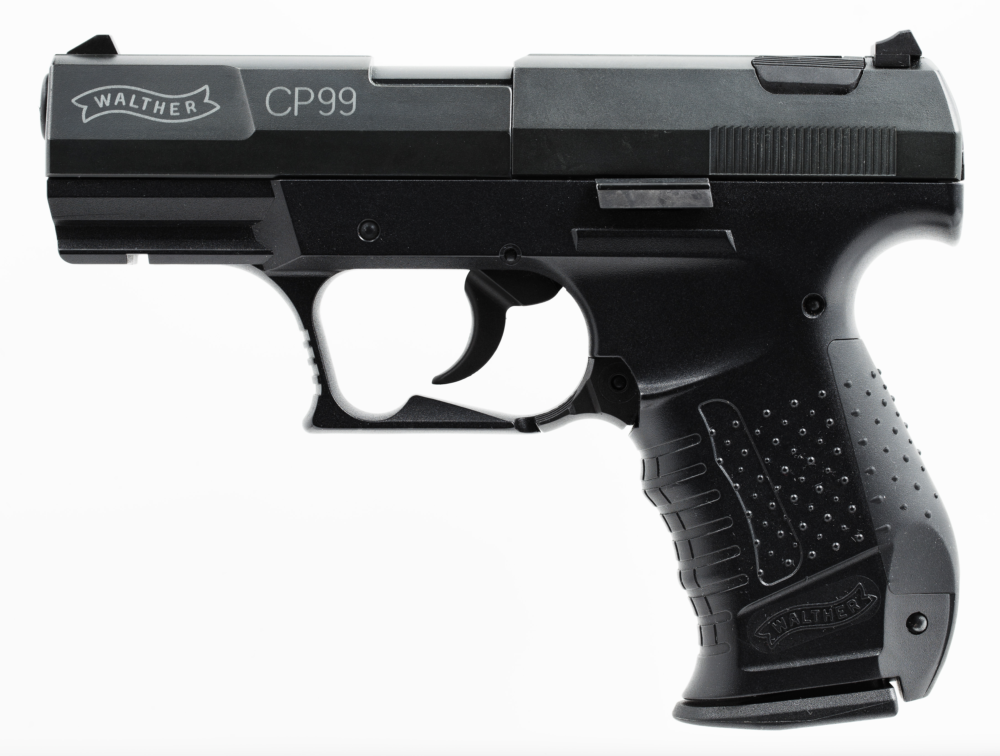

| Victor's Website |
|---|
Hobbies |
| About Me |
| My Cats |
| Hobbies |
| Gaming |
| References/Citations |
|
Author: Victor Zhang, Date Published: 11/17/20 FirearmsI like firearms, yes I am aware that a child should not have an interest in such a topic but it's just how they function, the customizability, and the loud bang noise can grant satisfaction (This also makes me like explosions). However, I don't think carrying a firearm is the answer to solving violence, in fact, I don't think so many people should be able to own a firearm. Liking firearms as a child leads to liking things similar to such things like nerf blasters, paintball, and airsoft. I own a bunch of nerf blasters, a now broken spring action BB pistol, and a Walther CP99 CO2 operated pistol which is the closest thing I own to an actual firearm. My interest most likely sparked from playing FPS (First Person Shooter) games and watching the firearms function. I then started to learn about how a firearm functions, the history of firearms, and how firearms relate to different military units. Umarex CP99 Compact Blowback BB Gun, Photo: LucasBosch, find the photo here AnimeAnime is a Japanese style animation that is meant to be an escape from the boundaries of reality which makes it open to so many more genres than normal live action shows/films. Anime is popular in Asia and northern North America to the point where there are anime conventions, this much popularity allows people to bond over anime and for people to make many new friends. People watch it so much because the shows can fit any person's taste with so many genres like comedy, romance, action, and some of its own more specific genres like Mecha/Military, Supernatural/Magic or genres targeted at specific audiences like Kodomo (children), Shonen (Young Teen Boys) Josei (Young Adult Women) and others. Anime has most likely changed me as a person in many ways allowing me to be a lot happier at times. Each anime has its own fanbase who are super interested in that anime and the events revolving around it. Some of my favourite animes include Assassination Classroom, Konosuba, The Disasterous Life of Saiki K, and JoJo's Bizzare Adventure.Assassination Classroom, Photo: Salva_Navarro, find the photo here GamingThere's a whole other section about the details of what games I play but yes, gaming is one of my hobbies. I enjoy gaming because you can do so much with it, it's a good way to feel like you're achieving something while also getting better at the game itself. Gaming is also a good way to make friends and socialize over voice chat or text chat, it's really one of the only things you can do during a quarantine. The problem with gaming being a hobby of mine is that the hardware that I use for gaming is really old which makes it hard to be able to play most games well, hopefully I'll be able to upgrade my PC soon. I mainly prefer FPS (First Person Shooter) games than anything else because when you're as competitive as me you want to feel a rush of adrenaline and a sense of satisfaction with your own skill. However I do enjoy some other types of games that require lots of strategy and thought like chess.Gaming Keyboard, Photo: wamiqurrehman093, find the photo here |